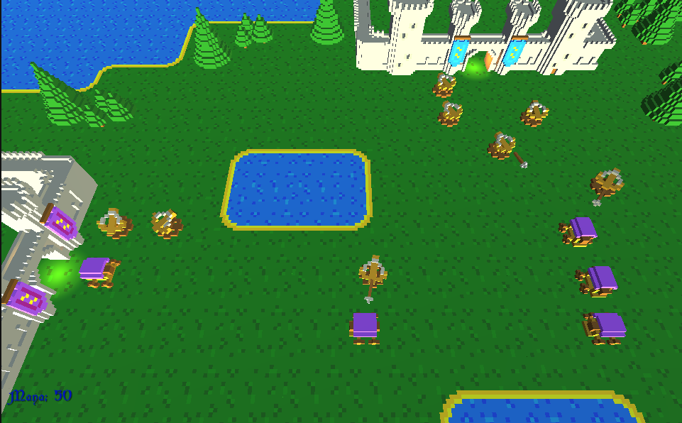
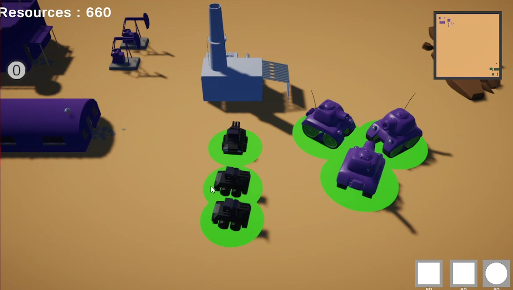
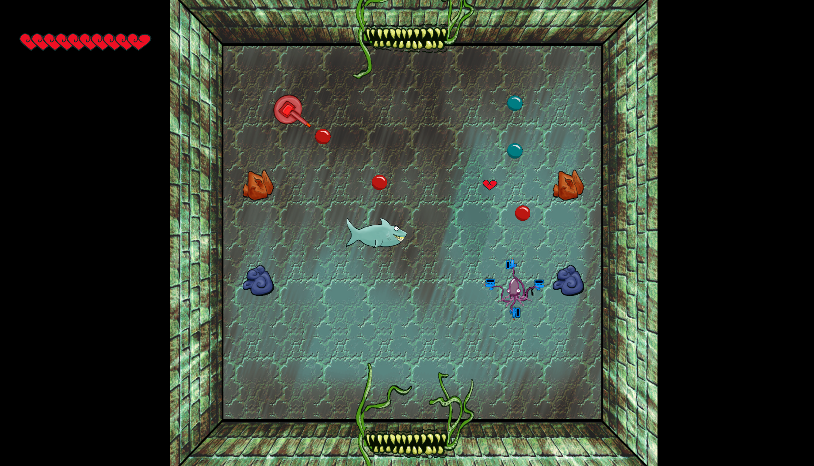
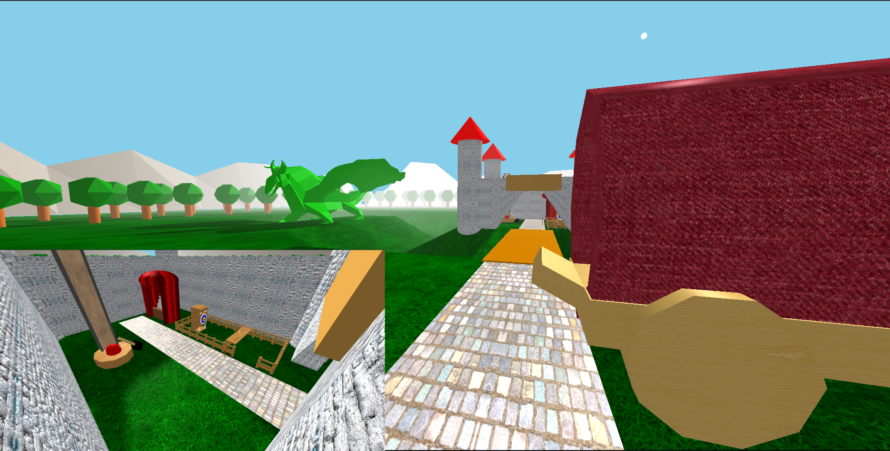
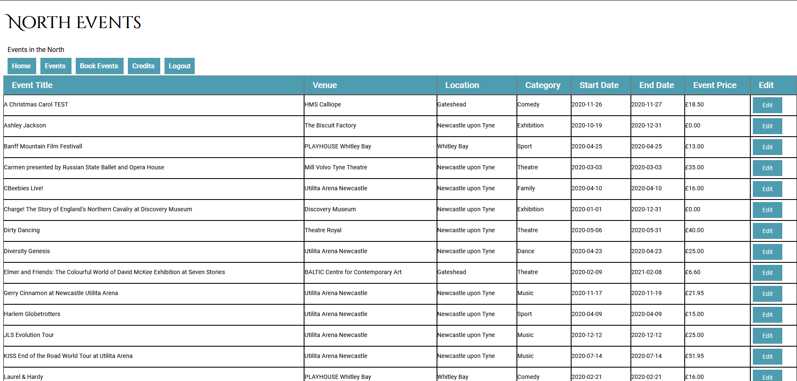

- C#
- Unity
- Breadth First Search

Tower Defence Game
This project shows an implementation of the 'breadth first search' algorthm. The enemies all use it to search out a path from their spawn to the
players base.
Support and models were supplied by Gamedev.tv, All code that is found within Assets (excluding AssetPacks) was written by me with the support from gamedev.tv.
Networked Real Time Strategy Game
- C#
- Unity
- Networking - Mirror

Networked Strategy Game
This project uses Mirror in Unity to allow for networked play. Up to 4 players can play together in this basic strategy game. with base and unit building that connects to steam to allow players to play over the steam network.
Full implementation can be seen in the Demo video supplied.
Support and models were supplied by Gamedev.tv.

Univertity Project
This project required me to build an engine, using C++ and DirectX9, and then making a game using the engine.
I kept component archetecture in mind while developing the game and future updates would serve to make the architecture more robust and decoupled.
All physics, collisions, objects and imputs were created using information gathered from my studies, including the third edition of Jason Gregory's Game Engine Architecture book.
Chris Rook, my tutor, supplied some of the code, including the singltons.
Tereza Filoušová, created all art and sprites for the game
- Javascript
- 3D Environment Creation

University project.
This project shows the Graphical Implementation of THREE.js, created within a team of 4 for an interactive kinect application. My focus was to develop the graphical elements within the application.
The project was creating utilizing the THREE.JS framework, it also utalizes pre-made scripts for loading models and moving around the scene. The models found inside the project were developed in Vectory, Blender and Javascript.
The group members work has been ommited.
- HTML
- CSS
- Javascript
- PHP
- SQL

University project.
This website was created for a fictional company. The website allows users to view events that are happening in the north east
of England, pulled from a database using SQL and PHP. It also allows an admin to log into the website and edit the database entries
from the browser.